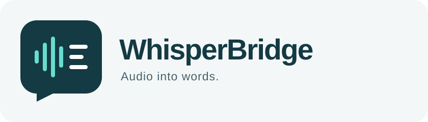
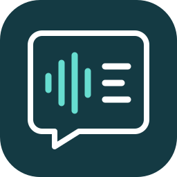

<!doctype html><html lang="en"><meta charset="utf-8"><meta name="viewport" content="width=device-width,initial-scale=1"><title>WhisperBridge brand</title><style>body{margin:0;background:#e8eef0;color:#143a43;font:16px -apple-system,BlinkMacSystemFont,Arial,sans-serif;padding:48px}main{max-width:1000px;margin:auto}h1{font-size:14px;letter-spacing:3px;text-transform:uppercase;margin:0 0 32px}figure{margin:0 0 24px;padding:32px;border-radius:24px;background:#f4f7f8}figure>img{max-width:100%;height:auto}.row{display:flex;gap:32px;align-items:center;flex-wrap:wrap}.dark{background:#143a43;color:white}.dark img{border:1px solid #46616a;border-radius:24%}figcaption{font-size:13px;letter-spacing:1px;margin-top:24px;color:#46616a}.dark figcaption{color:#b8d2d6}.sizes{display:flex;gap:32px;align-items:center}footer{margin-top:32px;font-size:14px;color:#46616a}</style><main><h1>WhisperBridge / Identity concept 01</h1><figure><figcaption>PRIMARY SIGNATURE · AUDIO → TEXT → PROMPT</figcaption></figure><div class="row"><figure class="dark"><figcaption>APPLICATION MARK</figcaption></figure><figure><div class="sizes"></div><figcaption>SCALE & MONOCHROME</figcaption></figure></div><footer>Original project identity. Independent of LM Studio and OpenAI.</footer></main></html>
